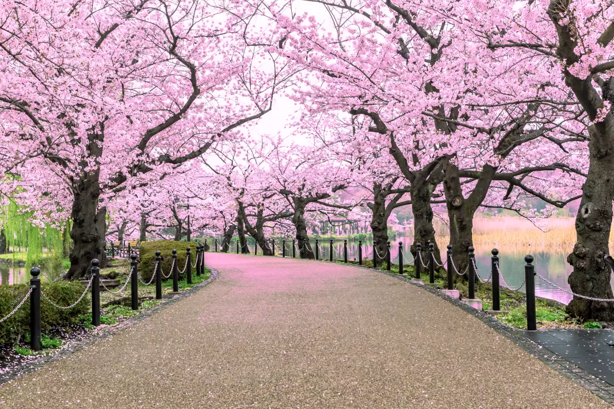
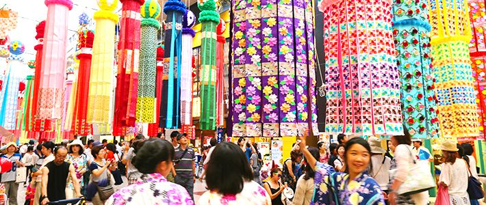
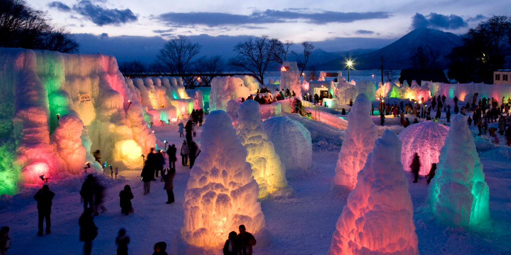
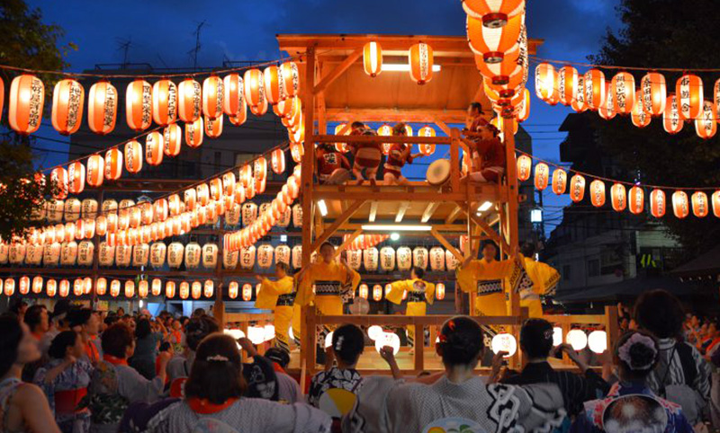
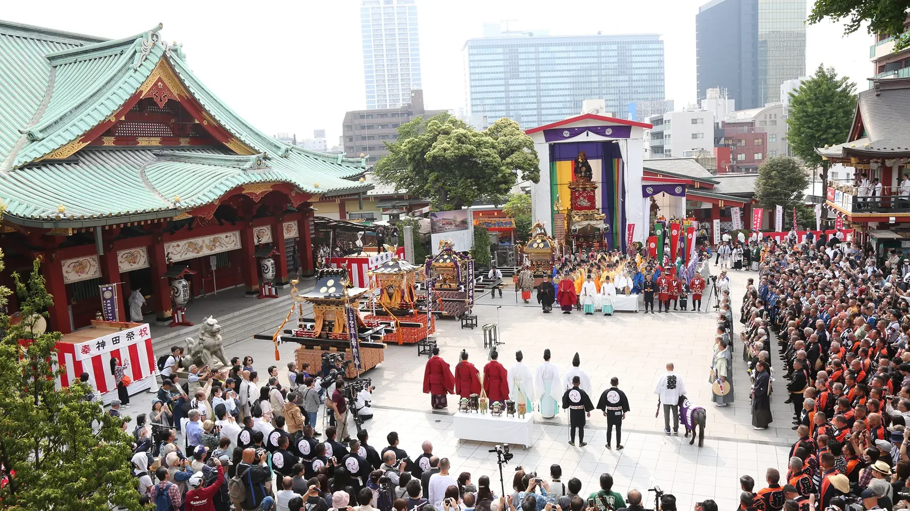

Festivales Japoneses
Descubre la riqueza cultural de Japón a través de sus festivales, auténticas expresiones de alegría y tradición. Déjate maravillar por la majestuosidad del Gion Matsuri en Kioto, la energía del Nebuta Matsuri en Aomori y la serenidad del Hanami bajo los cerezos en flor. Cada festival te invita a vivir una experiencia inolvidable, donde la historia y la celebración se entrelazan en perfecta armonía
Hanami (花見)-(Festival de los Cerezos en Flor)
Fecha: Finales de marzo a principios de abril.
El Hanami es la tradición japonesa de disfrutar de la belleza efímera de las flores, especialmente las de cerezo (sakura). Durante la primavera, la gente se reúne en parques y jardines para celebrar picnics y contemplar los cerezos en flor. Es una época de alegría y convivencia, donde la naturaleza es la protagonista.
Gion Matsuri (祇園祭)

Fecha: Todo el mes de julio, con el desfile principal el 17 de julio.
El Gion Matsuri es uno de los festivales más famosos y antiguos de Japón, celebrado en Kioto durante todo el mes de julio. Destacan sus impresionantes procesiones de carrozas (yamaboko), decoradas con gran detalle y cargadas de historia. Es un festival vibrante y lleno de tradición
Tanabata (七夕)
Fecha: 7 de julio (en algunas regiones se celebra en agosto).
El Tanabata, o Festival de las Estrellas, se celebra el 7 de julio. La leyenda cuenta que las estrellas Vega y Altair, que representan a dos amantes separados por la Vía Láctea, se reúnen una vez al año. La gente escribe deseos en tiras de papel (tanzaku) y los cuelga en ramas de bambú.
Festival de la Nieve de Sapporo (さっぽろ雪まつり)
Fecha: Primera semana de febrero.
Este festival se celebra en Sapporo, Hokkaido, durante el mes de febrero. Es famoso por sus espectaculares esculturas de nieve y hielo, que representan desde personajes de anime hasta monumentos famosos. Es un evento mágico que atrae a visitantes de todo el mundo.
Obon (お盆)
Fecha: Mediados de agosto (varía por región).
El Obon es un festival budista para honrar a los espíritus de los ancestros. Se celebra en agosto, y las familias se reúnen para visitar las tumbas de sus seres queridos y realizar ofrendas. Se realizan danzas tradicionales (Bon Odori) y se encienden farolillos para guiar a los espíritus.
Kanda Matsuri (神田祭)
Fecha: Mediados de mayo (cada dos años).
El Kanda Matsuri es uno de los tres grandes festivales de Tokio, celebrado a mediados de mayo. El festival se centra en el santuario de Kanda Myojin, y destaca por sus procesiones de mikoshi (santuarios portátiles) y sus desfiles llenos de energía